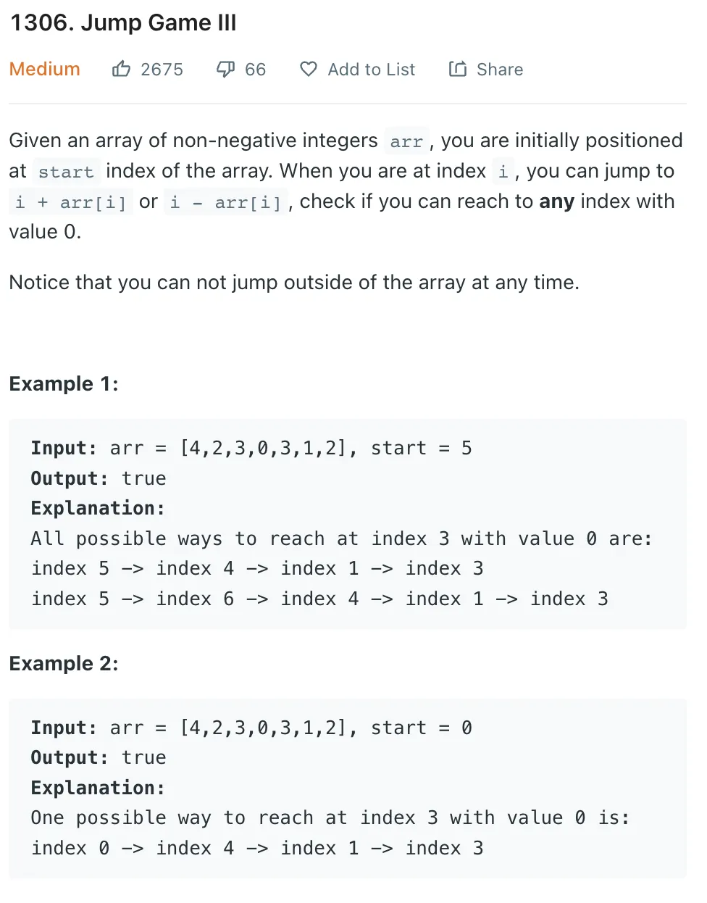
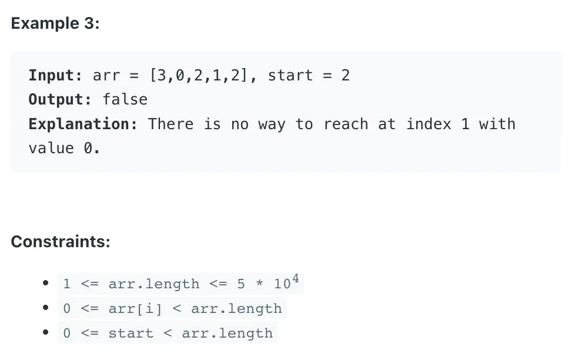

1306. Jump Game III
考過的公司：Asked by: Amazon
Question


先自己想想看 🤔Try it yourself first 🤔
✍🏽 My Solution
Runtime: 2 ms, faster than 97.01% of Java online submissions for Jump Game III. Memory Usage: 52.8 MB, less than 88.61% of Java online submissions for Jump Game III.
class Solution {
int n;
int[] arr;
boolean[] visited;
public boolean canReach(int[] arr, int start) {
this.arr = arr;
n = arr.length;
visited = new boolean[n];
return dfs(start);
}
private boolean dfs(int idx) {
if (idx >= n || idx < 0) return false;
if (arr[idx] == 0) return true;
if (visited[idx]) return false;
visited[idx] = true;
boolean reached = dfs(idx + arr[idx]);
return reached || dfs(idx - arr[idx]);
}
}
🧠 Thought Process
- Why did I choose this particular implementation?
- DFS : 回溯（多階段）+ 圖（有環）+ 搜索/遍歷
- 因為會跳來跳去會跳到重複元素，可能就會有環
- 轉換為圖上搜索問題，給一個起點，找路徑看是否能找到終點
- 多階段決策
- idx + arr[idx]
- idx - arr[idx]
- 符合條件：arr[idx] == 0
- 結束條件：
- 越界 idx >= n || idx < 0
- 訪問過 visited[idx]
- DFS : 回溯（多階段）+ 圖（有環）+ 搜索/遍歷